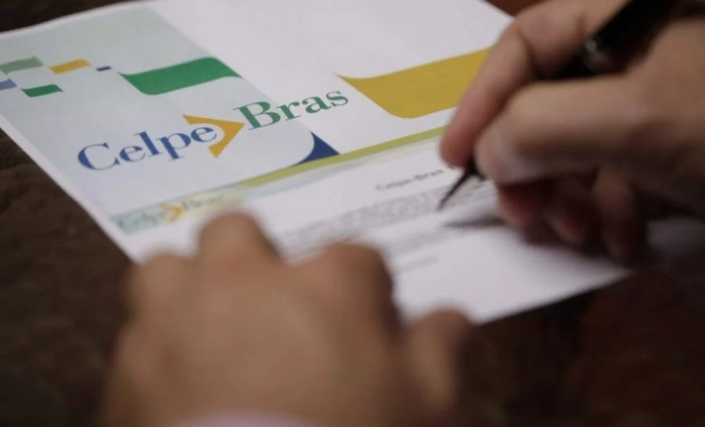
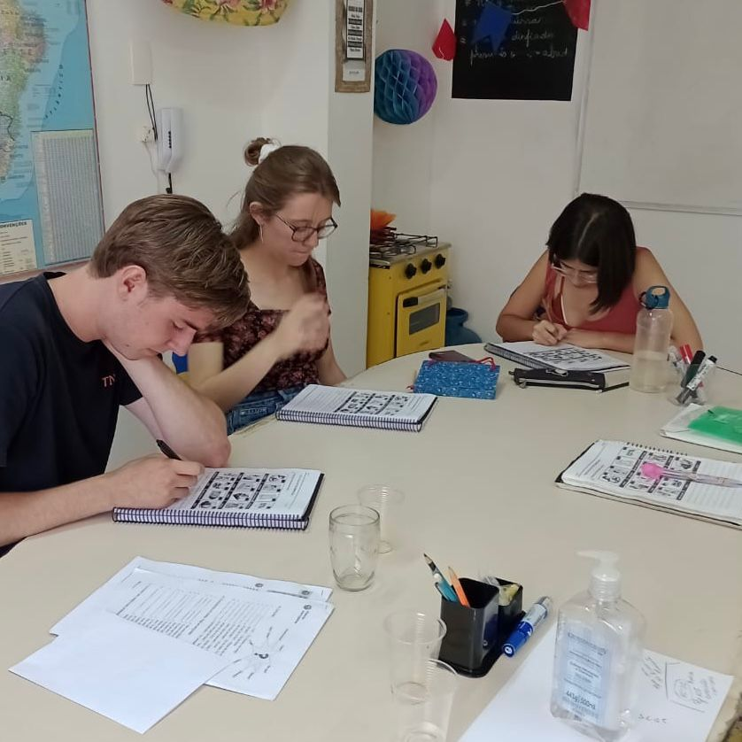
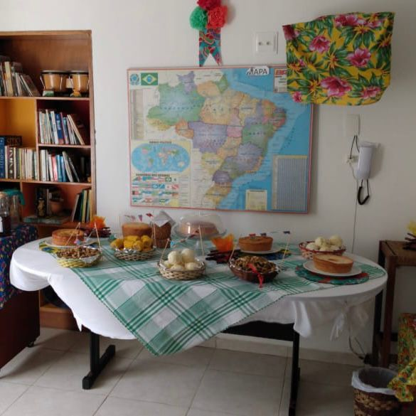
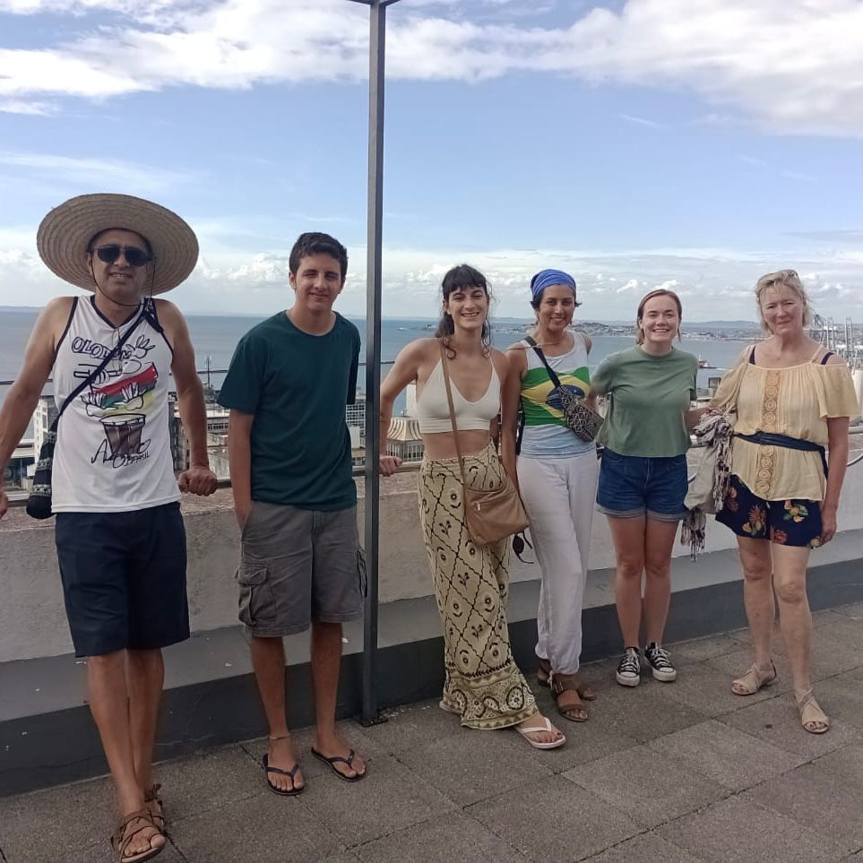
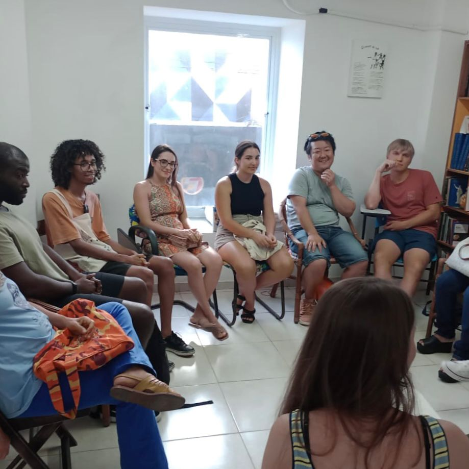
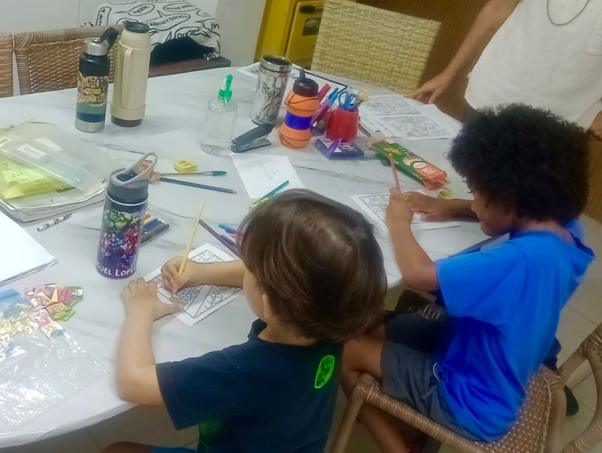
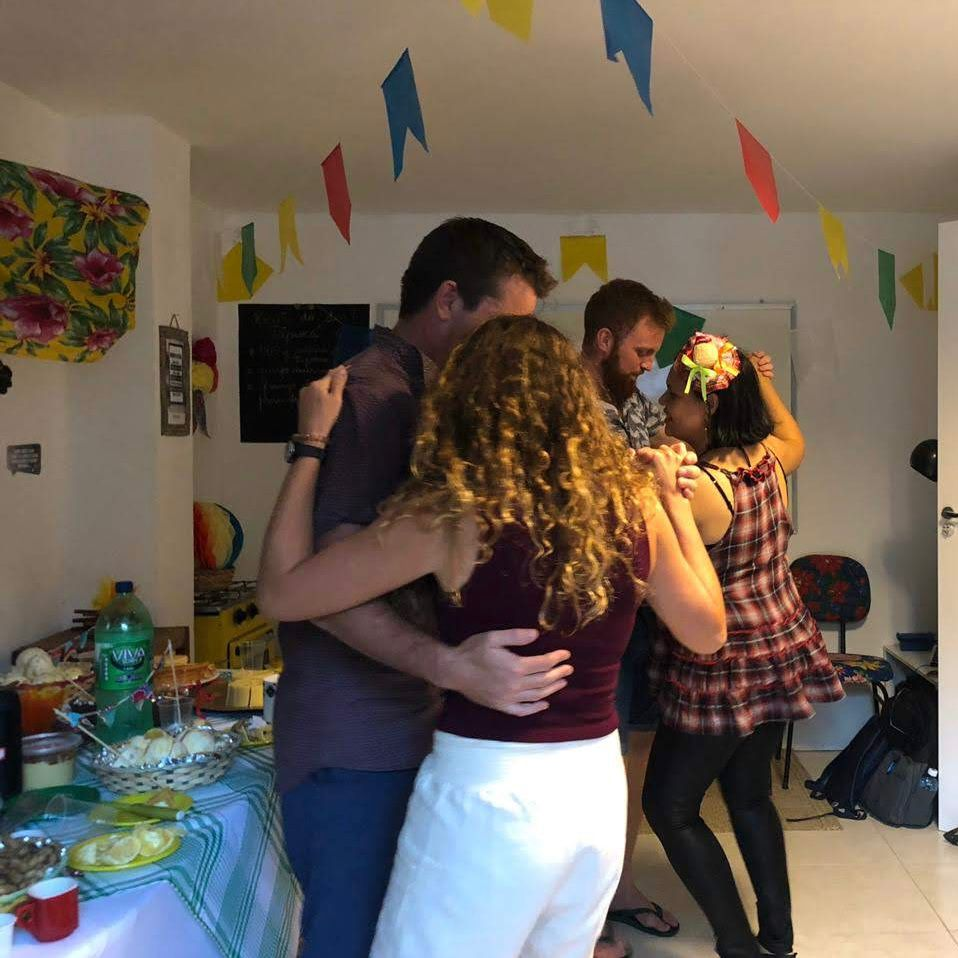
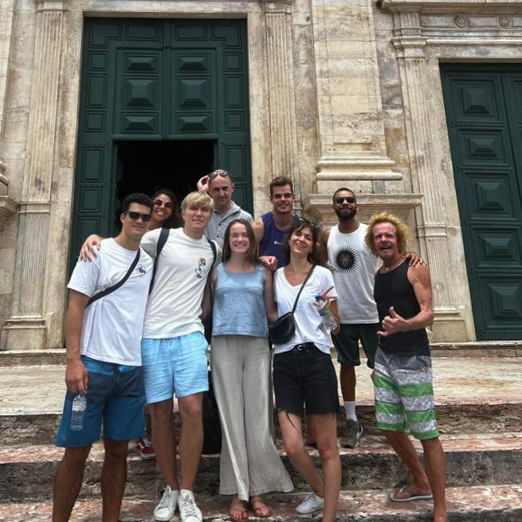
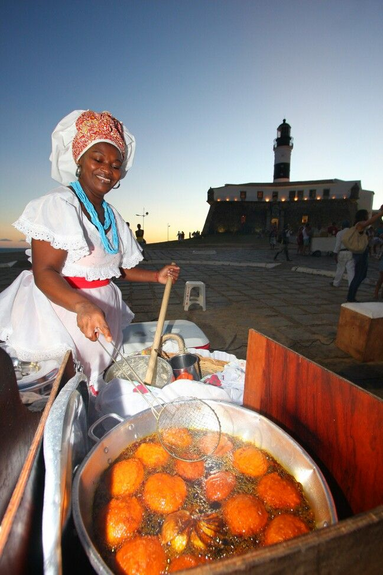
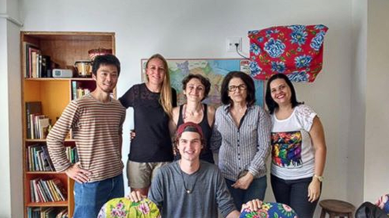

In-Person Classes
Flexible group and private classes — experience Portuguese in Salvador with expert teachers.
Our method combines culture, context, and conversation to guide you step by step. Whether you’re a complete beginner or refining your skills, we make learning natural and effective.
Flexible group and private classes — experience Portuguese in Salvador with expert teachers.
Live lessons, multimedia resources, and teacher feedback from anywhere in the world.
Fun, engaging lessons tailored for children and teens.
Structured exam preparation with practice tests and expert feedback.
Guidance through paperwork so your move/stay in Brazil is stress-free.
Stay with a Brazilian family and practice Portuguese daily while experiencing local life.
Three simple steps to start your Portuguese journey with BrazilLink.
Start with our free online test to find your perfect level, from beginner to advanced.
Select your ideal course: in-person immersion in Salvador or flexible remote classes.
Start learning! Join cultural activities and confidently practice Portuguese in real-life settings.
Learning Portuguese with us goes far beyond grammar — it’s about culture, connection, and unforgettable experiences.











Choose your next step below.